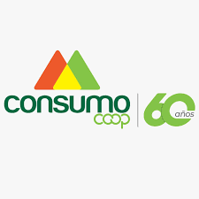
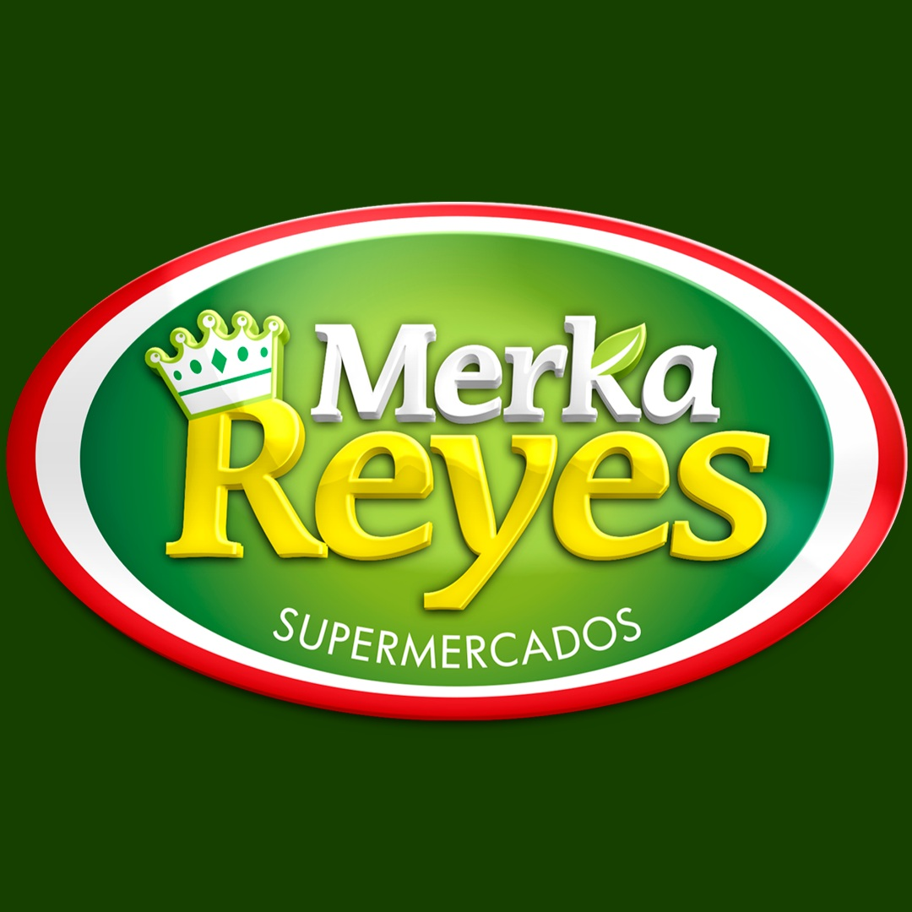
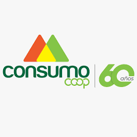
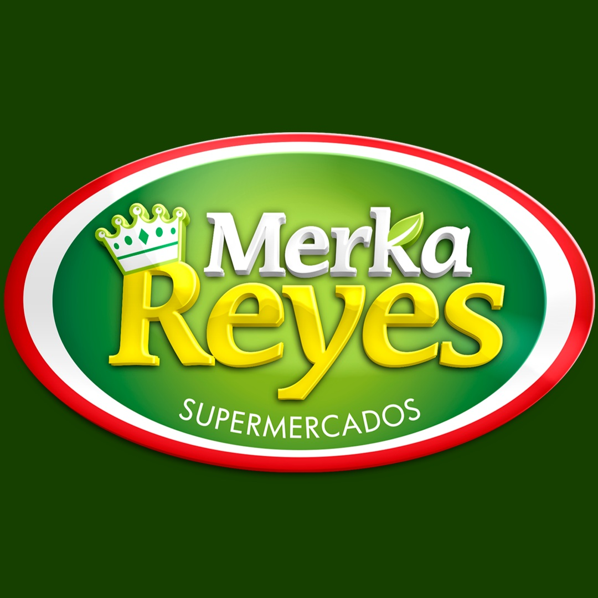

Hace diez años, un padre y su hijo decidieron unir lo que sabían: la experiencia de quien ha trabajado la tierra toda su vida, y el impulso de quien quiere llevar sus frutos más allá del horizonte. Así nació esta empresa familiar: no en una oficina, sino entre surcos de espinaca y campos de cebolla, bajo el sol y el viento que saben de trabajo honesto.
Con cada temporada, hemos crecido. Empezamos con pocas hectáreas, vendiendo en mercados locales. Hoy, hemos tenido el honor de que nuestros productos estén en las estanterías de varios de los supermercados más importantes de la ciudad. No porque seamos grandes, sino porque lo que hacemos, lo hacemos bien: con cuidado, con constancia, con respeto por el campo.
Nos mueve algo simple: que lo que llega a tu mesa tenga historia, calidad y vida. Y seguimos soñando. Pronto, nuestras flores también florecerán para otros mercados.
Esta empresa no es solo nuestro trabajo. Es nuestra manera de honrar el campo, de mantenernos unidos como familia, y de aportar algo bueno, verdadero y fresco al mundo.
Estamos ubicados en la vereda La Cuchilla, San Cristóbal, Medellín, Antioquia.
San Cristóbal, corregimiento rural de Medellín, ha sido históricamente un eje fundamental de la producción agrícola para la ciudad. Desde la época colonial, sus tierras fértiles y clima favorable permitieron el desarrollo de cultivos que abastecieron a la creciente población antioqueña. En el siglo XX, se consolidó como una de las principales zonas proveedoras de alimentos, especialmente con la expansión de cultivos de pan coger, café, frutas y hortalizas. Hoy, aunque enfrenta desafíos como la urbanización y la competencia con mercados externos, San Cristóbal sigue siendo un actor clave en la seguridad alimentaria de Medellín, con una agricultura que combina técnicas tradicionales y prácticas sostenibles. Su producción diversificada—que incluye desde aguacates y tomates hasta flores y productos lácteos—sigue llegando a plazas de mercado, tiendas locales y hogares, manteniendo su legado como despensa agrícola de la capital antioqueña.
Puedes encontrarnos en el siguiente mapa:
 


